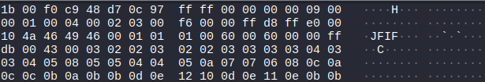
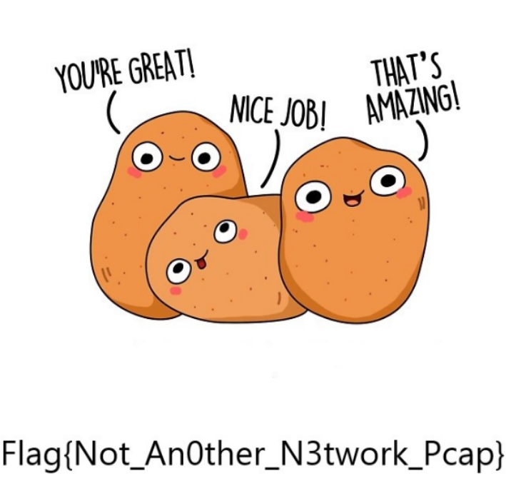
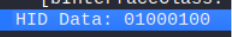
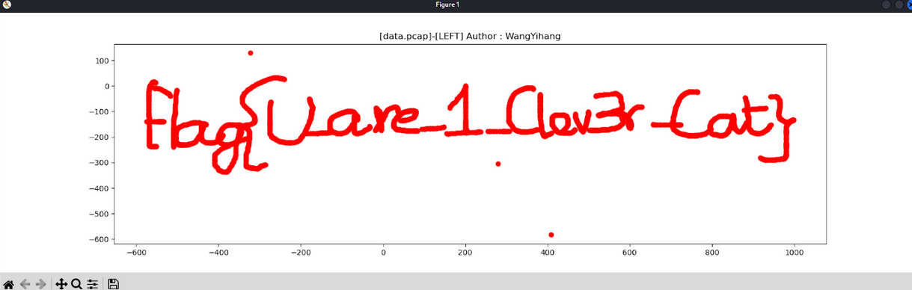
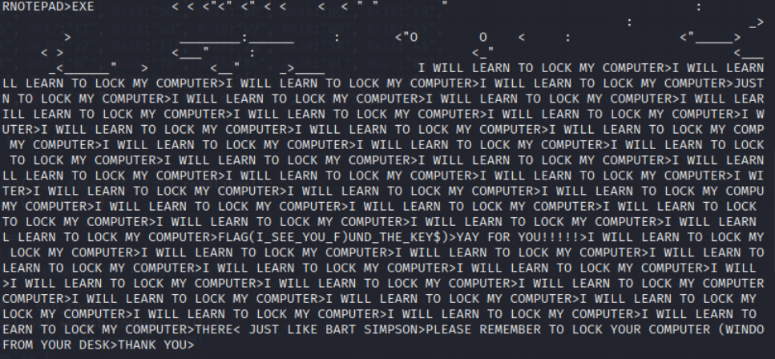

Recently I completed Tier 1 of Target’s Cyber Defense Challenge offered to members of the WiCys (Women in Cybersecurity) organization. It was a CTF comprised of four categories: cryptography/steganography, reverse engineering, USB forensics, and cyber threat intelligence. In this third part, I will go over the challenges in the USB forensics section.
Challenges
Find the Blue Yeti
100 points
We believe that while one of the ransomware operators was out in public they dropped this USB device. While plugging it in to make an image of it, we noticed that it had multiple auto run features. So, we booted up Wireshark and made some PCAPs of the device traffic.
To get you used to the layout of searching a PCAP for device information, we will start with you finding the Blue Yeti.
TODO: Write this
Know your Filters!
100 points
To help further you further in the next steps, you need to figure out what the filter type is when trying to view a Mass Storage Device in WireShark
TODO: Write this
Moving Files
200 points
There is a file that transfers when the device is connected to the analysis Virtual Machine. Filter down on the data to figure out what the file is.
I sorted the pcap by the length of the packet. Then I went through the packets manually until I found a packet with an extension, JFIF, which is a file extension for images.

Then I exported the packet bytes to a file I named vibes2
To confirm my hypothesis that it was a image, I ran file and indeed, it was a JPEG image.
When I opened it up:

Flag: Flag{Not_An0ther_N3twork_Pcap}
References
https://vincentkool.github.io/2017-AlexCTF-Fore3/*
I think this Mouse is Plotting on us?
200 points
When looking over this PCAP’s data it seemed like the mouse is trying to move about the screen on its own within the Virtual Machine we have its attached to. See if you can make any sense of the movements it is doing. Seems like it is plotting on us in some weird way. You can never be too care with these types of investigations.
Based on the problem description, I had to plot all the mouse movement. If the description didn’t mention that it was concerning mouse movement, the first thing to do would be to check the device by filtering by usb.idVendor and usb.idProduct.
I noticed that in each packet, there was HID Data, which corresponded to four bytes.

HID stands for Human Interface Devices. Since a mouse is a HID, I surmised that this must be the information from the mouse as according to OSDev, a mouse sends 3 or 4 byte packets for mouse movement (x, y) and mouse button press/release events.
Byte 1 - bit flags
Byte 2 - X movement
Byte 3 - Y movement
I exported this data using tshark:
tshark -r PlottingMouse.pcapng -T fields -e usbhid.data > mouse_movements.txt
The important bytes are the 2nd and 3rd byte.
To map it out, I found a script online UsbMiceDataHacker.py and modified it to meet my parameters (check the appendix). What’s nice about this script is that it also allows you to isolate certain movements. I ran the command with only showing Left Mouse movements:

Flag: flag{U_are_1_Clev3r_Cat}
References
https://wiki.osdev.org/Mouse_Input#Format_of_First_3_Packet_Bytes https://www.rootusers.com/google-ctf-2016-forensic-for2-write-up/ https://github.com/WangYihang/UsbMiceDataHacker/blob/master/UsbMiceDataHacker.py
Keypress…? Keypressing…? Keep pressing on!
300 points
This PCAP caught the USB acting like a keyboard! It seems to be trying to type something out in the virtual machine, but we can’t make sense of it yet. Review the data and try to figure out what this device is trying to accomplish with all of it’s Keypressing.
This was very similar to the mouse plotting challenge. Keyboard data is stored in 8 bytes.
Byte 0 - Keyboard modifier bits (shift, alt, ctrl)
Byte 1 - Reserved
Byte 2-7 - Keys that are currently being pressed
I used a script I found online and modified it to fit my parameters (see appendix), where shift is always being pressed. This was enough to find the flag, but is not the most accurate. When I have time, I want to go back and write my own script from scratch. 
Flag: flag{I_See_You_F0und_The_Key$}
References
https://github.com/mahaloz/ctf-wiki-en/blob/master/docs/misc/traffic/protocols/USB.md https://bitvijays.github.io/LFC-Forensics.html
https://gist.github.com/Rajchowdhury420/49476d46479184f5fd590057ef30bd92
Appendix
I think this Mouse is Plotting on us?
Edited script
#!/usr/bin/env python
# coding:utf-8
import sys
import os
import numpy as np
import matplotlib.pyplot as plt
mousePositionX = 0
mousePositionY = 0
X = []
Y = []
DataFileName = "mouse_movement.txt"
data = []
def main():
global mousePositionX
global mousePositionY
# check argv
if len(sys.argv) != 3:
print("Usage : ")
print(" python UsbMiceHacker.py data.pcap [LEFT|RIGHT|MOVE|ALL]")
print("Tips : ")
print(" To use this python script , you must install the numpy,matplotlib first.")
print(" You can use `sudo pip install matplotlib numpy` to install it")
print("Author : ")
print(" WangYihang <wangyihanger@gmail.com>")
print(" If you have any questions , please contact me by email.")
print(" Thank you for using.")
exit(1)
# get argv
pcapFilePath = sys.argv[1]
action = sys.argv[2]
if action != "LEFT" and action != "ALL" and action != "RIGHT" and action != "MOVE":
action = "LEFT"
# get data of pcap
#command = "tshark -r %s -T fields -e usb.capdata > %s" % (
#pcapFilePath, DataFileName)
#print(command)
#os.system(command)
# read data
with open(DataFileName, "r") as f:
for line in f:
data.append(line[0:-1])
# handle move
for i in data:
# Bytes = i.split(":")
Bytes = []
print(i[0:2])
# Bytes.append(1)
# Bytes.append(1)
# Bytes.append(1)
# Bytes.append(1)
Bytes.append(i[0:2])
Bytes.append(i[2:4])
Bytes.append(i[4:6])
Bytes.append(i[6:8])
if len(Bytes) == 8:
horizontal = 2 # -
vertical = 4 # |
elif len(Bytes) == 4:
horizontal = 1 # -
vertical = 2 # |
else:
continue
offsetX = int(Bytes[horizontal], 16)
offsetY = int(Bytes[vertical], 16)
if offsetX > 127:
offsetX -= 256
if offsetY > 127:
offsetY -= 256
mousePositionX += offsetX
mousePositionY += offsetY
if Bytes[0] == "01":
print("[+] Left butten.")
if action == "LEFT":
# draw point to the image panel
X.append(mousePositionX)
Y.append(-mousePositionY)
elif Bytes[0] == "02":
print("[+] Right Butten.")
if action == "RIGHT":
# draw point to the image panel
X.append(mousePositionX)
Y.append(-mousePositionY)
elif Bytes[0] == "00":
print("[+] Move.")
if action == "MOVE":
# draw point to the image panel
X.append(mousePositionX)
Y.append(-mousePositionY)
else:
print("[-] Known operate.")
pass
if action == "ALL":
# draw point to the image panel
X.append(mousePositionX)
Y.append(-mousePositionY)
fig = plt.figure()
ax1 = fig.add_subplot(111)
ax1.set_title('[%s]-[%s] Author : WangYihang' % (pcapFilePath, action))
ax1.scatter(X, Y, c='r', marker='o')
plt.show()
# clean temp data
os.system("rm ./%s" % (DataFileName))
if __name__ == "__main__":
main()
Keypress…? Keypressing…? Keep pressing on!
usb_codes = {
0x04:"aA", 0x05:"bB", 0x06:"cC", 0x07:"dD", 0x08:"eE", 0x09:"fF",
0x0A:"gG", 0x0B:"hH", 0x0C:"iI", 0x0D:"jJ", 0x0E:"kK", 0x0F:"lL",
0x10:"mM", 0x11:"nN", 0x12:"oO", 0x13:"pP", 0x14:"qQ", 0x15:"rR",
0x16:"sS", 0x17:"tT", 0x18:"uU", 0x19:"vV", 0x1A:"wW", 0x1B:"xX",
0x1C:"yY", 0x1D:"zZ", 0x1E:"1!", 0x1F:"2@", 0x20:"3#", 0x21:"4$",
0x22:"5%", 0x23:"6^", 0x24:"7&", 0x25:"8*", 0x26:"9(", 0x27:"0)",
0x2C:" ", 0x2D:"-_", 0x2E:"=+", 0x2F:"[{", 0x30:"]}", 0x32:"#~",
0x33:";:", 0x34:"'\"", 0x36:",<", 0x37:".>", 0x4f:">", 0x50:"<"
}
lines = ["","","","",""]
# pos = 0
for x in open("key_data.txt","r").readlines():
code = int(x[6:8],16)
if code == 0:
continue
# newline or down arrow - move down
# if (code in usb_codes):
# lines[pos] += usb_codes[code][1]
if code == 0x51 or code == 0x28:
# pos += 1
continue
# up arrow - move up
if code == 0x52:
# pos -= 1
continue
# select the character based on the Shift key
if (code in usb_codes and int(x[0:2],16)) == 2:
print(usb_codes[code][1], end = "")
elif (code in usb_codes):
print(usb_codes[code][0], end = "")
# for x in lines:
# print(x)